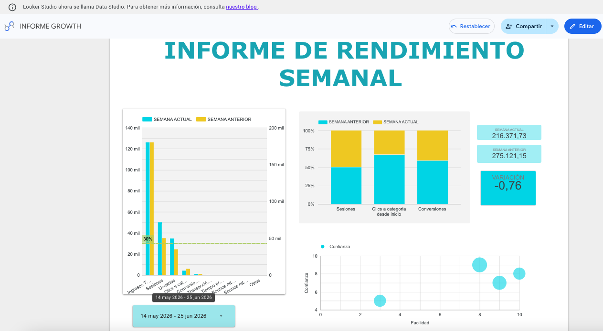

Case study · Meta Ads
From lots of leads to leads that actually buy: lead quality optimization in Meta Ads
An account with plenty of conversions but very few leads the sales team could actually use, driving up CAC and making campaign results unpredictable.
This project focused on improving the quality of contacts generated through Meta Ads (Facebook and Instagram) and optimizing cost per lead.
The problem
The account had many conversions but few genuinely useful leads for the sales team, which pushed up CAC and made campaign results hard to predict.
The work
I reviewed the campaign and audience structure, adjusting targeting, messaging and creatives to better match the ideal customer profile. I added better-defined conversion events and form filters to reduce low-relevance sign-ups, and launched remarketing campaigns aimed at users who had shown interest but had not completed the sign-up.
Through a continuous cycle of analyzing key metrics (CPL, form conversion rate and lead quality as perceived by the sales team), I prioritized the ad and audience combinations that brought in leads most likely to move down the funnel.
The result
A higher share of qualified leads, a lower cost per lead and more efficient campaigns focused on contacts with real potential to become customers.

Does your Meta Ads account generate lots of leads but few sales?
I can review your targeting, conversion events and remarketing funnel to prioritize the leads with real purchase potential.
Talk to Daniel on WhatsApp